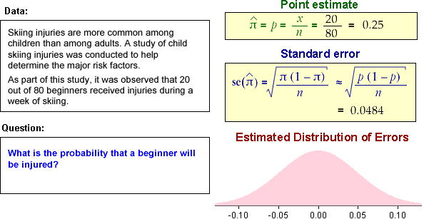

Error distribution
Most commonly used parameter estimates are either unbiased or can be proved to be asymptotically unbiased. For example, the expected value of a maximum likelihood estimator based on a random sample tends to the actual parameter value as the sample size \(n \to \infty\). For large samples,
\[ E[\hat{\theta}] \;\; \approx \; \; \theta \]We can often also find the standard deviation of the estimator (or an approximation) — its standard error. In particular, for maximum likelihood estimators,
\[ \se(\hat {\theta}) \;\;\approx\;\; \sqrt {- \frac 1 {\ell''(\hat {\theta})}} \]Finally, maximum likelihood estimators are asymptotically normally distributed.
This provides an approximate distribution for the estimation error,
\[ error \;\;=\;\; \hat {\theta} - \theta \;\; \sim \;\; \NormalDistn\left(\mu=0, \;\;\sigma=\se(\hat{\theta})\right) \]Binomial examples
Each of the following data sets can be assumed to be based on a series of independent Bernoulli trials with probability \(\pi\) of success, so the number of successes has a binomial distribution.
From the properties of the binomial distribution, we know that the sample proportion of successes is an unbiased estimator of \(\pi\) and we have an exact formula for its standard error. In each of the examples below, the sample size is also reasonably large, so the estimator is approximately normally distributed.
\[ \hat {\pi} \;\; \sim \;\; \NormalDistn\left(\pi, \;\;\sigma=\sqrt{\frac {\pi(1-\pi)} n} \right) \]The calculations on the right find the point estimate of \(\pi\) and its standard error.

In each example, a numerical value for the standard error is found by replacing \(\pi\) by \(\hat{\pi}\) in its formula. The approximate normal distribution for the errors is shown on the bottom right.
In each example, the error distribution gives a good indication of how far the sample proportion is likely to be from the true probability of success, \(\pi\).